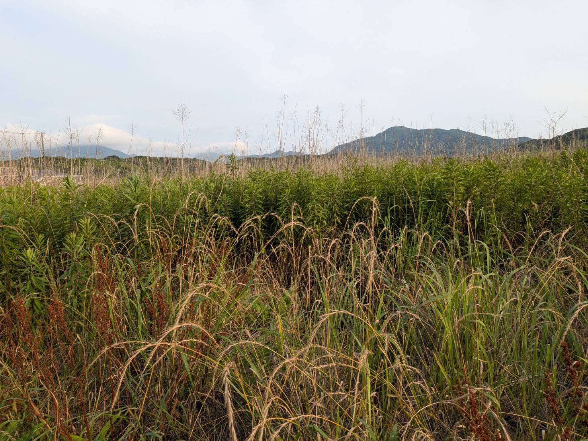
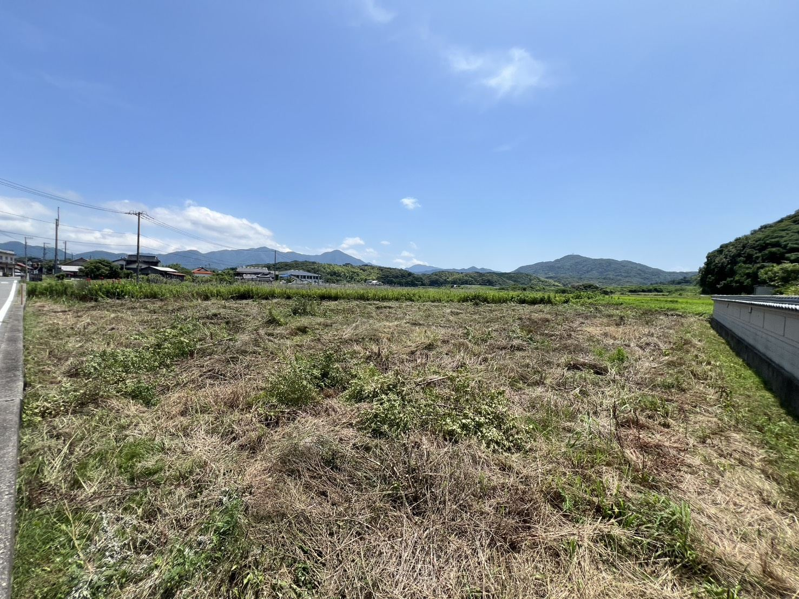
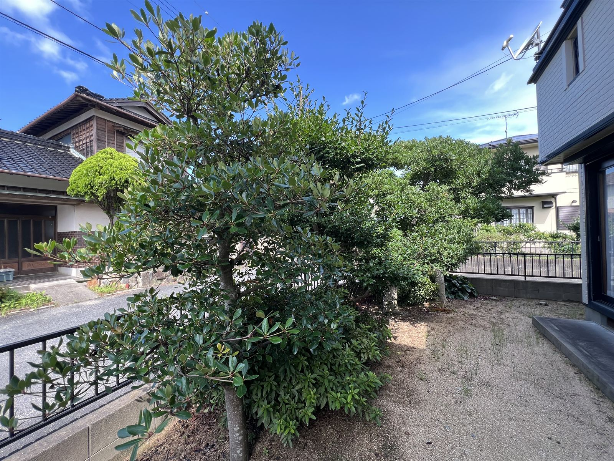
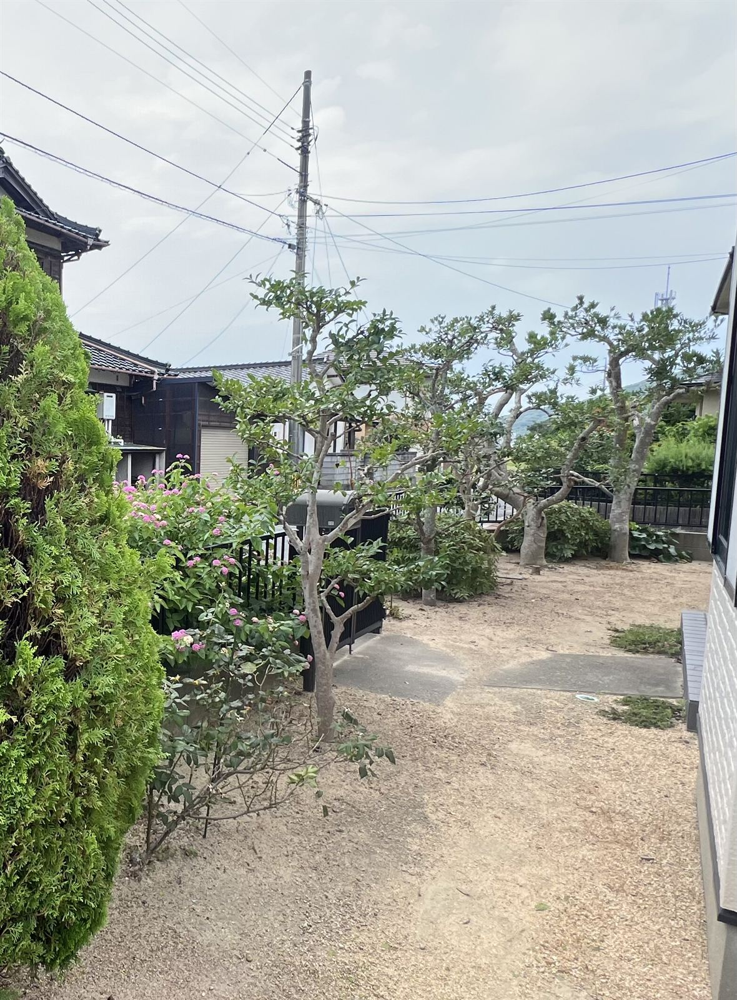
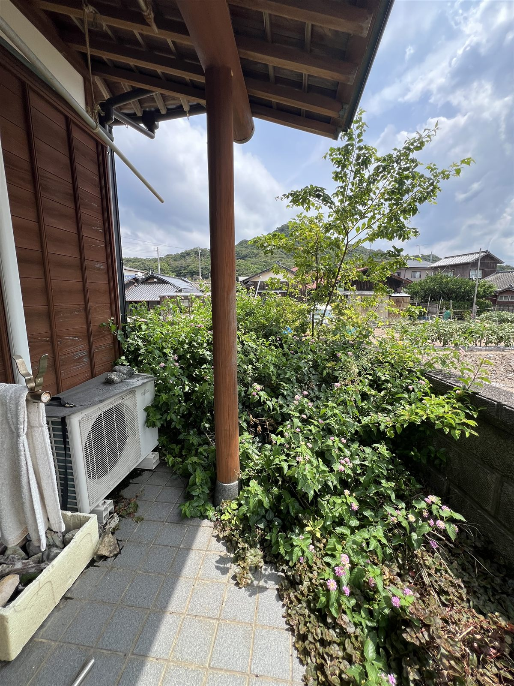
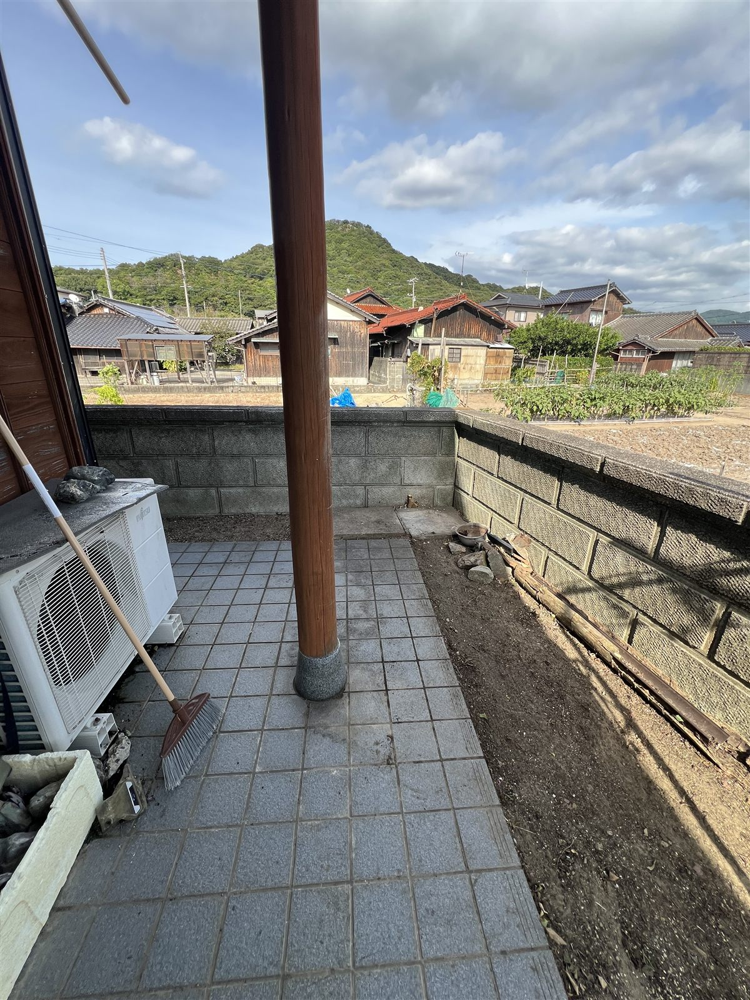
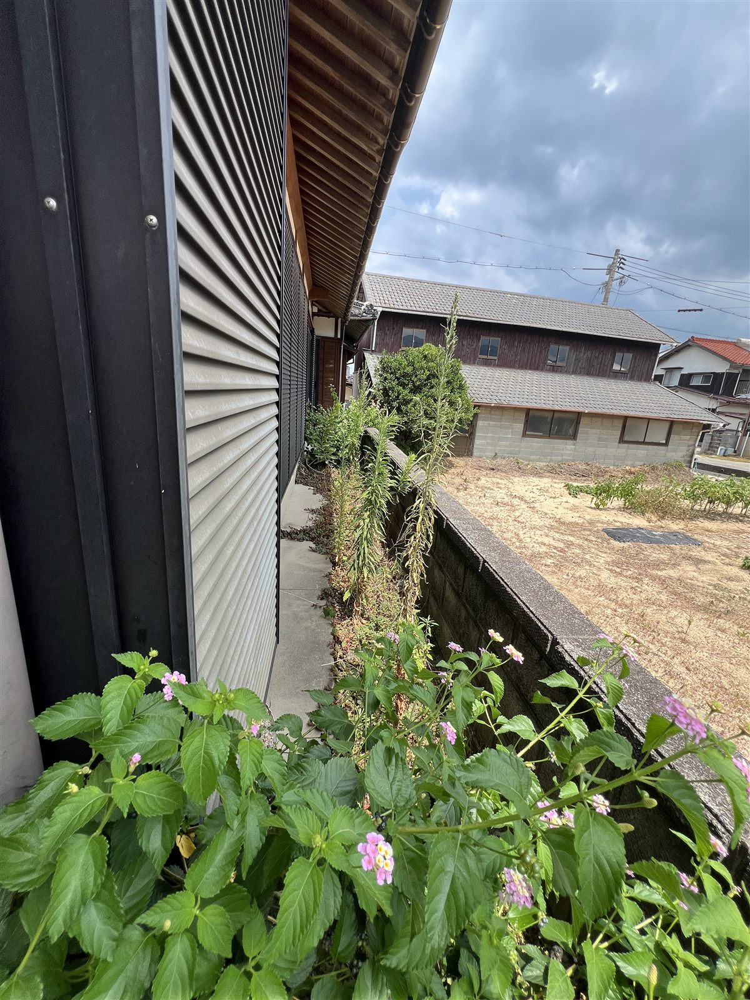
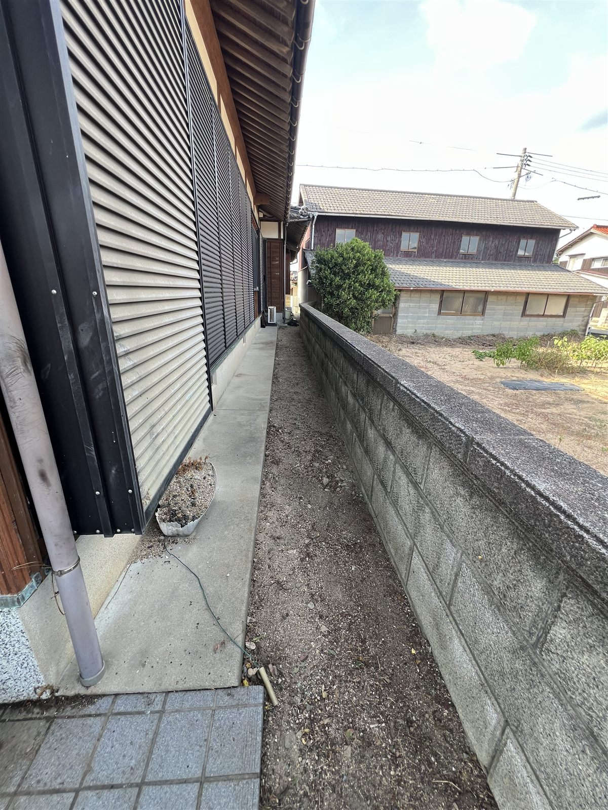
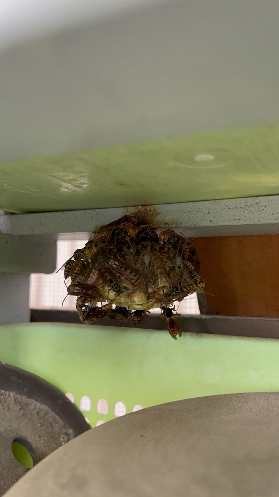

「頼んだら、どれくらい綺麗になるの？」
その答えを、実際の写真でご覧ください。
「業者に頼むのは初めてで、仕上がりが不安…」
そんな方にこそ見ていただきたいのが、このページです。
ここでは、とよサポが実際に行った作業のビフォーアフターをご紹介しています。同じようなお悩みをお持ちでしたら、「うちの場合はどうなる？」とお気軽にご相談ください。お見積りは無料です。

Before
After長期間手つかずで、大人の背丈ほどまで草が伸びてしまった土地です。刈払機（草刈り機）を使って広範囲を一気に刈り取り、奥まで見通せるスッキリとした状態になりました。
ここまで草が伸びると、ご自身での作業は体力的にも大変ですし、虫や蛇などの危険もあります。「もう手が付けられない…」という状態でも大丈夫。プロの機材で一気に解決いたします。

Before
After枝葉が大きく茂り、お庭が薄暗くなってしまっていた庭木です。1本1本樹形を見ながら思い切って枝を整理し、お庭全体が明るく、風通しの良い状態になりました。剪定した枝葉の回収・処分まで全て対応しています。
枝が伸びすぎると、日当たりや風通しが悪くなるだけでなく、台風時の枝折れや、お隣への越境トラブルの原因にもなります。「どこまで切っていいかわからない」という方も、お気軽にご相談ください。
▼ 玄関まわり

Before
After▼ 犬走り

Before
After駐車場・玄関前・犬走りの草刈り作業です。場所に合わせて刈払機と草抜き工具を使い分け、細かく残った草には除草剤を散布して、完全に枯らす処置をしています。
犬走りには、抜くには大きすぎる草も生えていました。無理に抜根すると犬走りやブロック塀を傷める恐れがあるため、切り株にキリで穴を空けて除草剤の原液を注入し、根まで完全に枯らす処置を行いました。
大きくなった草や木は、刈るだけだと切り口からまた元気に生えてきます。「切る＋根を枯らす」までがワンセット。とよサポでは、再発防止まで見据えた処置を標準で行っています。

蜂の巣の駆除作業です。場所は屋外の棚の裏。普段あまり動かさない物の陰に、アシナガバチが巣を作っていました。
蜂の巣は「雨風がしのげて、人が普段見ない場所」にできやすく、軒下やベランダの天井、物置や外の棚の裏、エアコン室外機のまわりなどが要注意。気づいたときには、写真くらいの大きさになっています。特に8月の巣は蜂の数が増えていて、巣に気づかず物を動かした拍子に刺されるケースが多い時期です。
蜂の巣を見つけたら、まず近づかず、巣を刺激しないようにしてください。巣が大きいもの・高い場所・スズメバチと思われるものは、ご自身で無理をなさらないでください。「これって蜂の巣？」という段階でも構いません。写真を送っていただければ、対応をご相談できます。
※掲載しているのは、実際にとよサポが行った作業です。事例は今後も随時追加していきます。
「うちの庭も同じような状態…」という方は、LINEで現場のお写真をお送りください。
おおよそのお見積りをお伝えできます。もちろん相談だけでも大歓迎です。
地域の皆様を支える「とよサポ」が、
迅速・丁寧にスッキリ綺麗にいたします！